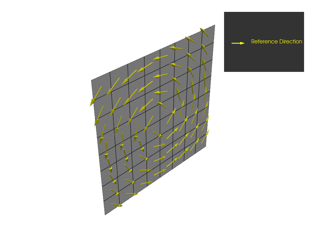
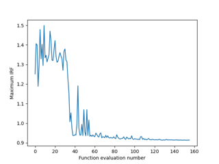

update#
- Model.update(*, relations_only=False)#
Update the model.
- Parameters:
relations_only (bool) – Whether to update and propagate only the status of all objects.
Examples using Model.update#

Rosette
Basic selection rules


Imported solid model


Optimizing ply angles